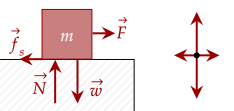
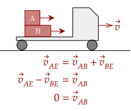
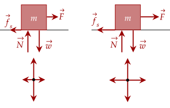
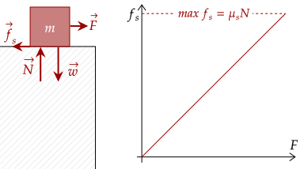
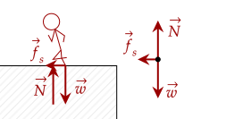
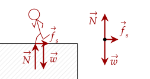
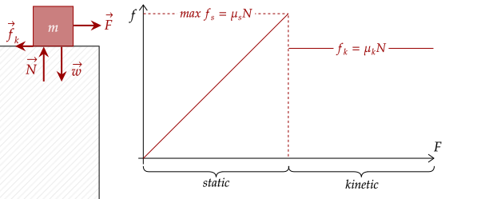
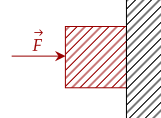
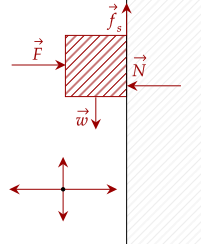

We saw that the normal force pushes up on objects. Likewise, we know that objects have various surfaces; some rougher than others. We know it feels harder to push on a rough surface than on a smooth surface. This leads us to another force that arises due to the contact of objects.
Imagine a box on a rough surface. You push on it, but it doesn't seem to move. You push at it harder, and it still doesn't move. Finally, you push at it with all your might and it moves.

If the surface was frictionless, it should've moved when you pushed it, even at your weakest. It seems that friction has stopped the movement of the block. This type of friction attempts to keep objects stationary.
One may note the term "stationary relative to one another". Recall in our study of reference frames that moving objects can be stationary if the reference is moving.
For example, two blocks on a truck are both moving, but since they are both moving at the same velocity, they are "at rest" relative to one another.

We showed that when we pushed it without much strength, it didn't move, yet when we pushed it harder, it still didn't move. By Newton's first law, since the box is at rest, that means the forces are balanced.
The only other force acting on the box must be static friction. From this, we see that the static friction is equal to the force that we push. We push weakly, static friction is weak. We push harder, static friction pushes harder to balance the forces.

In other words, static friction can be described as "lazy". It only pushes as much as it needs to.
Since the normal force is the one causing the contact, it is the reason why there is friction. However, as we noted, some surfaces have lower friction while some have very high friction. For example, rough sandpaper has less friction than smooth ice. We can quantify this with a new variable.
The term "ratio" here means that the higher the normal force, the higher the possible static friction. This makes sense; objects with more mass have more weight, and we noted that objects with more weight tend to have a higher normal force.
We saw that when we pushed hard enough, we were able to get it moving. The coefficient of static friction gives us the maximum possible strength of the coefficient of static friction.
This equation gives us the possible strength of static friction, and we see that the absolute maximum is when . After that, the box starts to move. Before that, static friction is equal to the force pushing the object to balance out the forces.

One thing to note is that friction and the normal force are perpendicular to one another. This may prove useful to us one day.
At 10N, the strength of the static friction is also 10N to keep it at rest. At 25N, it continues to be 25N. However, at 51N, it exceeds the maximum static friction, and the box starts to move.
The maximum strength of the static friction can be calculated by getting . We don't know the normal force, but we can get it by noting the jug's weight.
This means that the normal force is also 98N. Noting the coefficient of static friction, we can get the maximum strength of the static friction.
This means that pushing it at 10N will do nothing, 25N will cause it to move, and we have to push with atleast 19.6N of force to start to move the box.
From what you've seen, the static friction appears to be a nuisance. However, without it, we can't walk. We push against the floor, and the floor pushes against us by Newton's third law. Because of static friction, we can be confident that when we push on the floor, we won't start to slip and fall.

The above figure shows a person pushing on the floor. The foot attempts to slip backward, but static friction pushes back to keep it at rest. Likewise, when the person puts his foot down, it tries to slip forward, but static friction pushes it backward.

The foot pushes down on the floor, which gives it a force. Then, the floor pushes back on the foot, keeping it at rest, and not letting it slip. Since the two balance out, we can set them equal to each other, and then solve.
We don't know the mass of the runner, so let's just call it . We also assume its on a level surface, so the weight is equal to the normal force. The static friction is in opposite direction to the force, so we set it as negative.
We can substitute the equation for the maximum static friction, then subtitute weight for the normal force since we stated it was equal.
Now, using the Law of Acceleration, we substitute the force as and the weight as . We drop the vector notation here since we don't need direction anymore.
We now have an equation for the acceleration. Calculating, .
Since the box is heavier than you, the normal force for the box is larger than your normal force. This means your maximum static friction is less than that of the box; this means that when you push on the floor at the strength you need to push the box, you start to slip. Thus, it is impossible.
We saw how friction works to stop us from moving something, however what happens when the object starts moving? We know that friction still plays a role; it is harder to push on a rough surface than a smooth surface.
This friction helps to slow down things, and is the other type of friction. Just like static friction, there is also has a coefficient of kinetic friction,
Just like static friction, it has a similar equation to it. However, this time, kinetic friction is near constant; it isn't lazy like static friction, it has a constant value depending on the normal force.
You may have felt before that it is harder to get something moving then it is to get it to keep moving. This is true; the coefficient of static friction is usually higher than that of the kinetic friction.

We first get the weight of the player.
The normal force is then 774.2N. The kinetic friction must then be 470 N, given that he was sliding (meaning he was moving relative to the ground). We then rearrange the equation.
The force of friction attempts to slow down the box going from rest to 3.4m/s. Thus, this is kinetic friction. We don't know the mass of the box, so let's say its .
We get that the acceleration is −2.646m/s². We then use a kinematic equation to get the time.
Giving us that the time taken is 1.3s.
Let's now try problems where both types of friction might play a role.
The weight is equal to the normal force, so we can use the weight of the trunk (240N). We first calculate the maximum force for the static friction.
Which means one needs to push a little above 98.4N to get it moving. Now, to keep it moving at constant velocity, it has to have no acceleration; by the Law of Inertia, this means that the forces are balanced. This means that the pushing force is equal to the force of kinetic friction.
Thus, once it gets moving, it has to be pushed at 76.8N to keep it at constant velocity. Now, pushing at the same 98.4N, there is now a net force, causing an acceleration. Letting the kinetic friction be negative as it is moving opposite to the motion, we can calculate the net force.
We can now get the acceleration using the law of acceleration. However, we need the mass. We collect that first.
Finally, we get the acceleration.
Since the friction is connected to the normal force, one must have a good grasp of the normal force to deal with friction.
The coworker pulling up reduces the normal force; recall that it is also a lazy force, like static friction.
We first set up the equation for the worker pulling horizontally. The net force here must be zero, as this is the time the crate will start to move. Setting up the equation, setting the maximum static friction as negative gives us this.
Now, solving for the normal force, we note three vertical forces; being the weight, the normal force, and the force that the coworker is pulling up. Since the coworker isn't pulling up the crate enough such that it starts to accelerate upwards, the net force is still zero.
Now, we substitute this equation for the normal force.

We draw the force pushing the box into the wall. Then, there is a normal force from the wall to the block. The block has a force of weight pulling it down. Given that the block wants to move down, friction points up to resist this relative motion.
